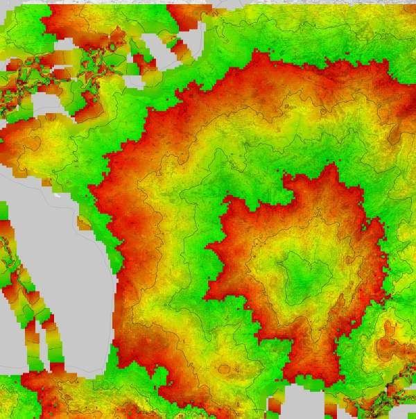
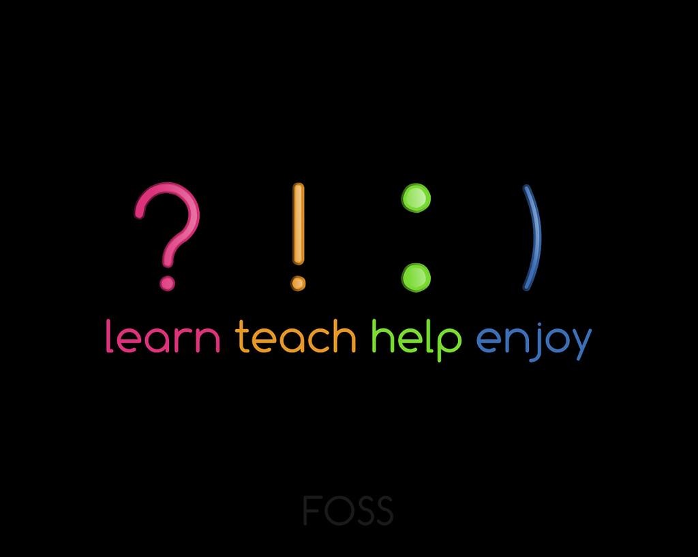
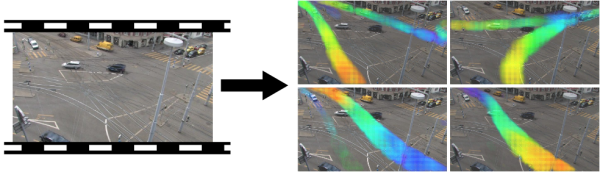
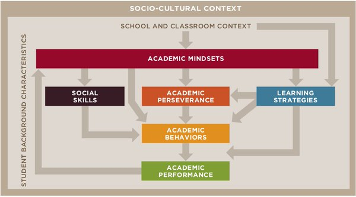
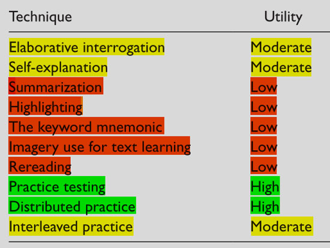

Please wait, while the deck is loading…
# {*no-status title-slide} // comment
-
-
-
## Tonight
- Personal Learning
- Facilitating Learning
- Resources
- {notes}
- name, credential (interest and readings but no expert)
- hook: better at learning / helping other learn
- last point is also the credentiality
- ... before we start
## `$ whoami` {darkened bottom-left noimgmargin /no-status}



- {notes}
- chercheur en ML, mais avant en archi log
- geek: des projets à coté, dont deck.js et des isochrones
- enseignant + swc instructor
## {/no-status no-h}
- `$ whoami` {no}
- Software Engineer
- Researcher: machine learning, computer vision
- Teacher: web technologies, computing literacy, …
- Geek: deck.js slides, isochrones, …
# Personal Learning
## The Importance of the Mindsets

- From *Teaching Adolescents to Become Learners: The Role of Non-cognitive Factors in Shaping School Performance*
## Develop a Growth Mindset
- Fixed mindset
- **intelligence is static**
- think you are good in some area
- and bad in others
- and that it can't change
- Growth mindset {slide}
- **intelligence can be developed**
- believe you can learn anything
- if you put effort, work and practice
## Take Care of Yourself
- Do sport
- stimulates neural development
- reduces stress
- Sleep well {slide}
- consolidates learning
- increase focus
- Meditate, concentrate on a side activity {slide}
- reduces stress
- improves concentration capabilities
## Basics Techniques, Compared

- The scientific paper and a summary (from which the above table is taken)
## Take Care of your Learning
- Plan your learning
- spaced/distributed/interleaved learning
- overview then details
- practice chunking (grouping ideas)
- Switch between thinking modes: focused vs diffuse {slide}
- Protect your learning {slide}
- cut distraction, avoid procrastination
- maximize focused attention
- ensure regular breaks
- Use handwriting {slide}
## Tool: the pomodoro technique {image-full bottom-left darkened /black-bg /no-status}
- {notes}
- focused (as it is time boxed)
- "ensures" breaks
## Tool: flash cards {image-full bottom-left darkened /black-bg /no-status}
## Tool: concept maps {image-full bottom-left darkened /black-bg /no-status}
# Facilitating Learning
## Key Points
- Be enthusiastic
- Know your "audience" // and interset
- levels: novice -> competent -> expert {slide}
- zone of proximal development, scaffolding
- Favor a sense of belonging {slide}
- fight the impostor syndrome
- watch Amy Cuddy
- don't use "just"
- Ensure the proper mindset {slide} // next
## Growth Mindset {growth}
- Do
- Emphasize learning goals
- Praise people for effort
- Attribute success to working hard
- Embrace mistakes
- Model learning from mistakes
- Don't {slide}
- Focus only on performance goals
- Praise people for getting the right answer without trying
- Describe certain youth as "smart"
- Reinforce self-criticism
- Maintain a fixed mindset about your own expertise
## Tool: sticky notes {image-full top-left darkened /black-bg /no-status}
- {side}
- display completion
- ask for help
- answer MCQ
- provide feedback
## Peer Instruction:
just in time teaching
- Have people discuss and "teach" each others // also learning groups
- Use to
- debunk misconceptions
- anticipate pain points
- {notes}
- Instructor poses question based on students' responses to their pre-class reading
- Students reflect on the question
- Students commit to an individual answer
- Instructor reviews student responses
- Students discuss their thinking and answers with their peers
- Students then commit again to an individual answer
- The instructor again reviews responses and decides whether more explanation is needed before moving on to the next concept.
# Resources
## Resources {.resources #ressss}
- *How Learning Works: Seven Research-Based Principles for Smart Teaching* **Book by Marie K. Norman, Marsha C. Lovett, Michael W. Bridges, Michele DiPietro, and Susan A. Ambrose{subinfo}**
- *Learning How to Learn: Powerful mental tools to help you master tough subjects* **MOOC by Barbara Oakley, Terrence Sejnowski {subinfo}**
- *Software Carpentry Instructor Training* **live website with the content that is used to train instructors involved in software carpentry{subinfo}**
- Wikipedia
- *zone of proximal development* …
- *peer instruction* …
## Keep On Learning {image-full top-left darkened /black-bg /no-status}
## Thanks! Questions? {deck-status-fake-end /minion}
twitter: `@remiemonet`
web/email: `http://home.heeere.com`
Recommended Links: see resources
# {no-print}
# Attribution
# @chunk: attrib.md
/ − automatically replaced by the author − automatically replaced by the title